Panfried Dumplings
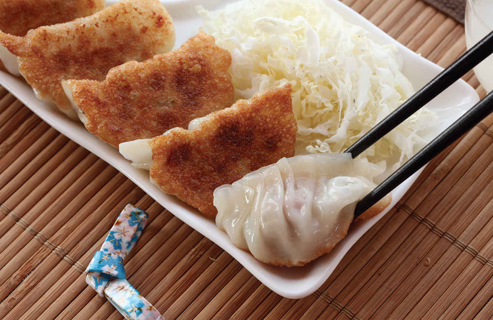
My earliest cooking memories involve sitting cross-legged on the worn-out, seventies-style bright orange shag carpet at the low, wide Japanese oak table in our living room. Every couple months, my mom would plant me and my sisters there in front of the television with a bowl of gyoza filling and a stack of store-bought dumpling wrappers. Rather than the traditional pork filling, my mom made hers with ground beef—the stretch of Riverside Drive by our apartment, between the Cotton Club and 132nd Street, used to be home to a number of large-scale meat cutters and butcher shops, and hamburger was cheap. My sisters and I would sit there, stuffing and folding dumplings, placing them in neat rows on baking sheets.
My mom would panfry a batch of them for dinner that night, deep-fry some to stick in our lunch boxes the next day, and freeze the rest. We’d eat them every other week or so until the supply was depleted and we’d make a new batch.
That Japanese oak table, which my grandparents shipped over from Japan in the seventies, is now in my living room in Seattle. We don’t have a TV in our living room, but I still use it to stuff dumplings, and ever since reaching “big kid” age, my daughter, Alicia, helps make them. (She’s been an expert at eating them for years.)
The world of fillings-stuffed-into-dough-then-steamed-boiled-or-fried is vast, stretching from Japanese gyoza to Chinese guo tie and har gao, to Tibetan momos, Turkish manti, or even Polish pierogi. There’s something extraordinarily satisfying about biting into a perfect dumpling—the tug of dough, the burst of steam, that first hit of flavorful filling—that seems to surpass cultural boundaries. Have you ever met anyone who doesn’t like dumplings? Didn’t think so.
The hardest part of making dumplings at home is forming and rolling out the dough, and it’s not 100 percent necessary—after all, the gyoza we made growing up were made with store-bought wrappers, as is typical of the Japanese gyoza, whether homemade or from a restaurant. Thicker Chinese-style store-bought wrappers also work just fine for Chinese guo tie or jiao zi.
That said, even homemade wrappers are not particularly hard to do. Like scallion pancakes, dumpling wrappers are made with a hot water dough, which behaves much more like a thick paste than a stretchy bread dough. It’s malleable stuff that doesn’t snap back, making it easy to roll out into even, thin circles with the help of a small rolling pin or wooden dowel (even a beer or wine bottle will do in a pinch). After steaming or boiling, it becomes slightly translucent, with a pleasant springiness that contrasts with a crunchy base when fried.
HOW TO STUFF AND SHAPE DUMPLINGS
Before starting to form dumplings, you need to set up a work space to make the process more efficient (believe me, after years of doing this the inefficient way, I can tell you how much of a difference good mise en place makes).
Here’s what you’ll want for each person:
•A cutting board, preferably wood (the wrappers will not stick to wood as easily)
•A stack of homemade or store-bought round dumpling wrappers, kept under plastic wrap or a dense, clean kitchen towel to prevent them from drying out
•A bowl of filling with a spoon or small offset metal spatula for spreading it
•A small bowl of water for moistening the edges of the dumpling wrapper
•A clean dish towel for wiping your fingers and cutting board and keeping them dry in between dumplings
•A rimmed baking sheet lined with parchment paper to place your finished dumplings.
If you’re using frozen store-bought dumpling wrappers, make sure that they are fully thawed before you start.
How to Form Traditional Pleated Dumplings
This is the most traditional way to form Japanese gyoza or Chinese guo tie or jiao zi. It’s also a method that takes a little practice. Don’t worry if your dumplings don’t look great at the beginning—so long as the wrappers are closed around the filling they will taste just fine.
If you find it hard to hold the dumpling up in the air while you pleat the wrappers, you can place the skin on your cutting board. The shape will come out slightly different, but it should still be fine. I’ve been making these dumplings since grade school, and it still took years before I got to the point where I could make them entirely in my hands and far longer until I was good enough to hit the thirty-seconds-per-dumpling barrier. I’ve seen professional dumpling makers bang them out in under ten seconds apiece!
Step 1 • Spoon in the Filling
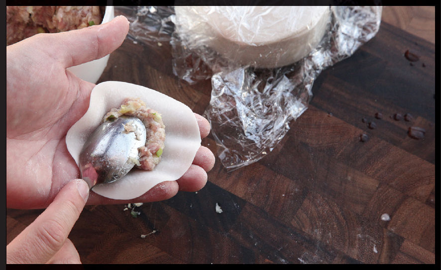
I’m a chronic overstuffer. Whether it’s a burrito, a taco, or a simple sandwich, if I have the opportunity to put way more filling into something than it can reasonably handle, it’s a good bet that I won’t miss that chance. Dumplings are no exception, and I have to consciously remind myself not to put as much filling in there as I’d like. If this is your first go-around, you may want to stick with as little as a teaspoon or two. Once you get good at shaping, you’ll be able to bump that amount up to about a tablespoon.
There’s one real key to dumpling filling, though—one that took me years to discover: do not place your filling in the center of the dumpling in a cute little ball. This is a surefire way to end up squeezing filling out of your dumpling around the edges, ruining the seal. Instead, it’s much better to spread the filling in a disk-shaped layer. This way, the filling will bend and conform with your wrapper as you start folding.
Step 2 • Moisten the Edge
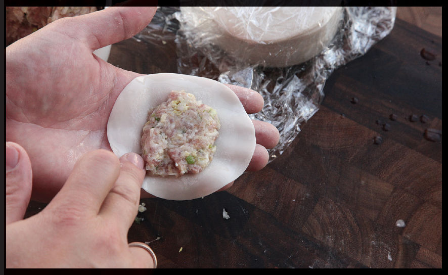
Dip the very tip of your finger in water and very lightly moisten the edge of the wrapper, then dry your finger carefully on the clean towel. It’s important not to let the edge of the wrapper get too wet.
Step 3 • Pinch the Seam
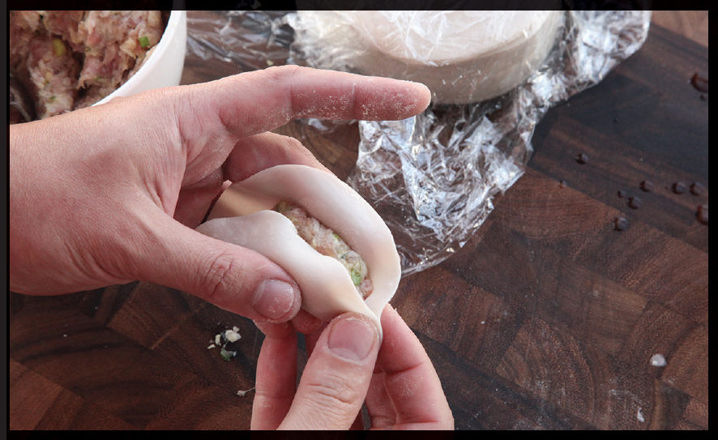
Gently support the dumpling with the middle and ring fingers of your right hand, using your left hand to keep the dumpling folded like a taco. Use the thumb and forefinger of your right hand to pinch the near seam shut.
Step 4 • Pleat along One Side
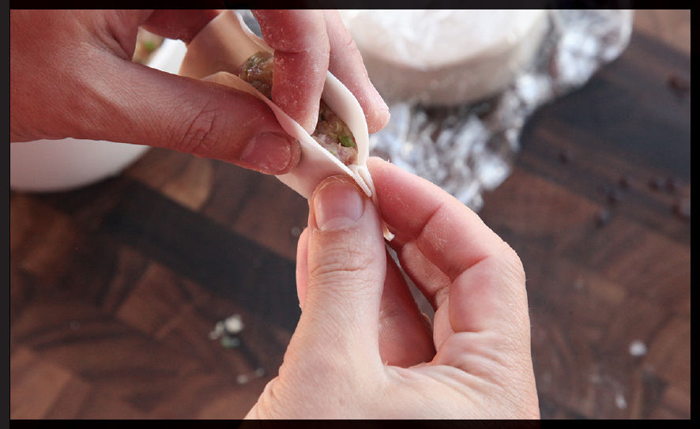
Continuing to gently support the dumpling, start using the thumb and forefinger of your left hand to feed the edge of the filling into your right thumb and forefinger, forming small pleats on the near edge. The ring finger and pinky of your left hand should be supporting the far end of the dumpling, making sure that the filling doesn’t get squeezed out.
Step 5 • Keep Crimping!
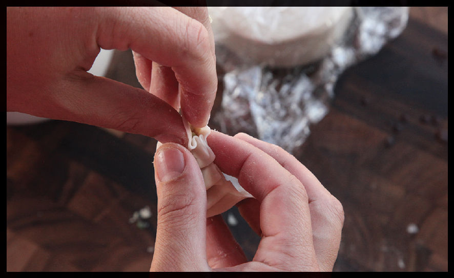
Continue crimping the seam until you reach the far corner, making sure to squeeze out any excess air as you go.
Step 6 • Shape the Dumpling
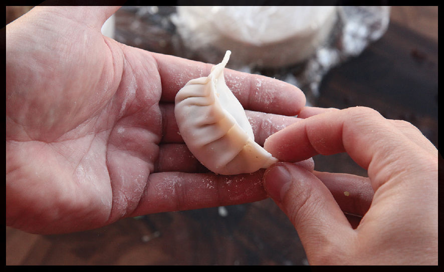
Once the dumpling is crimped, you’ll find that it forms a natural crescent shape with the crimped edge on the outer portion of the curve. Place the dumpling flat on the cutting board and use your fingers to adjust the shape of the crescent so that the bottom lies flat and the sides are plumped outward. Transfer the finished dumpling to the baking sheet, wipe your fingers clean, and start on the next one.
And hop to it—these dumplings aren’t going to stuff themselves!
How to Form Simplified Pleated Gyoza
Are you finding the traditional pleat a little too difficult? No worries: even folding the gyoza in half to form half-moons will get the job done, so long as you squeeze out excess air. But there’s another method that is far simpler than the one-sided pleat. The trick is to pleat each half of the dumpling working from the center out, with the pleats facing the center. The left side should be a mirror image of the right. This method also lets you rest the dumpling on your cutting board the whole time.
Step 1 • Seal the Center
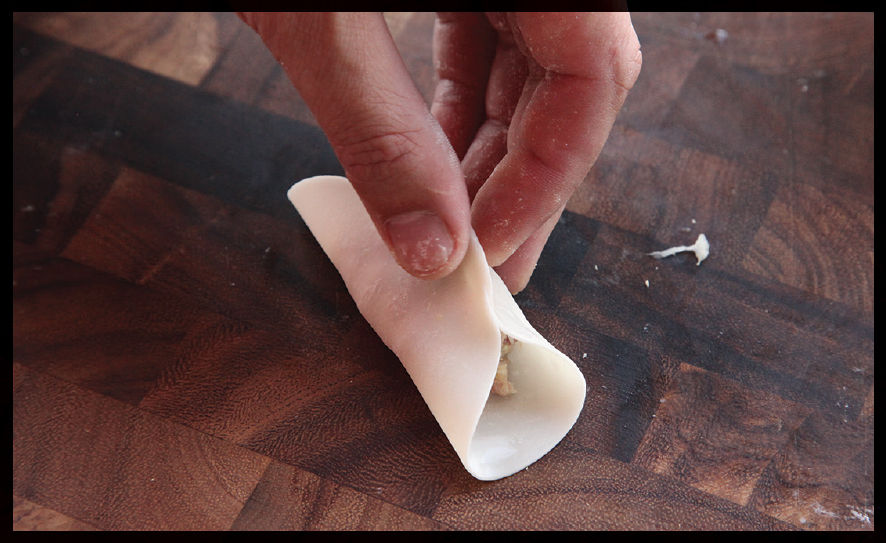
Start by placing the filling on the skin and moistening the edge just as with the standard method. Lift the front and back edges like a taco and seal them in the center.
Step 2 • Form Pleats
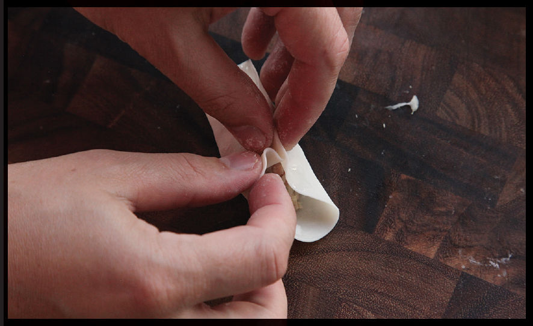
Keeping the center pinched, start forming pleats along the front edge, folding the pleats so that they point toward the center, sealing the skin as you go, and working from the center to the right corner.
Pinch in the center.
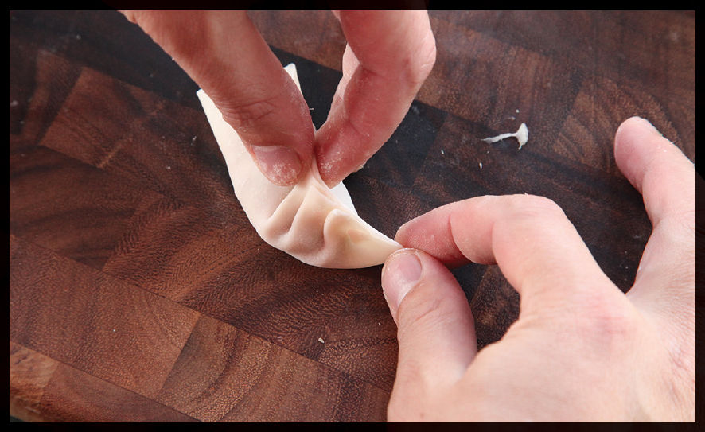
Continue adding pleats until you get to the corner, then seal the dumpling shut, making sure you squeeze out any air as you go.
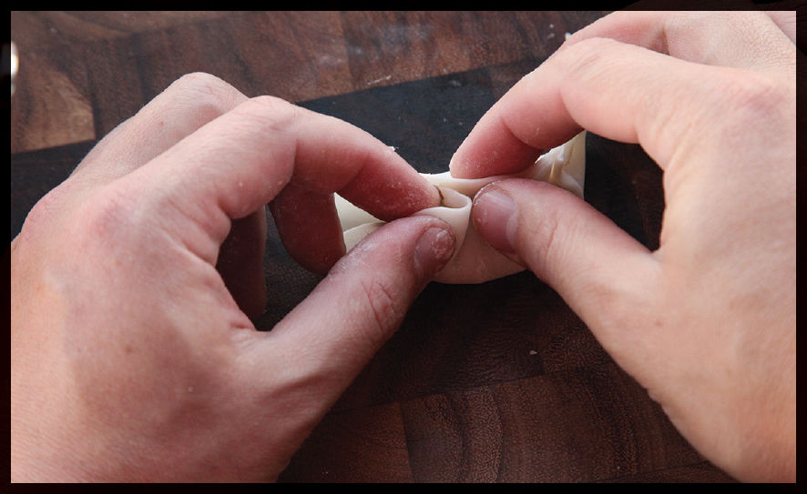
Repeat the pleating process on the left edge, with the pleats again pointing toward the center, until the dumpling is completely sealed.
Step 3 • Shape the Dumpling
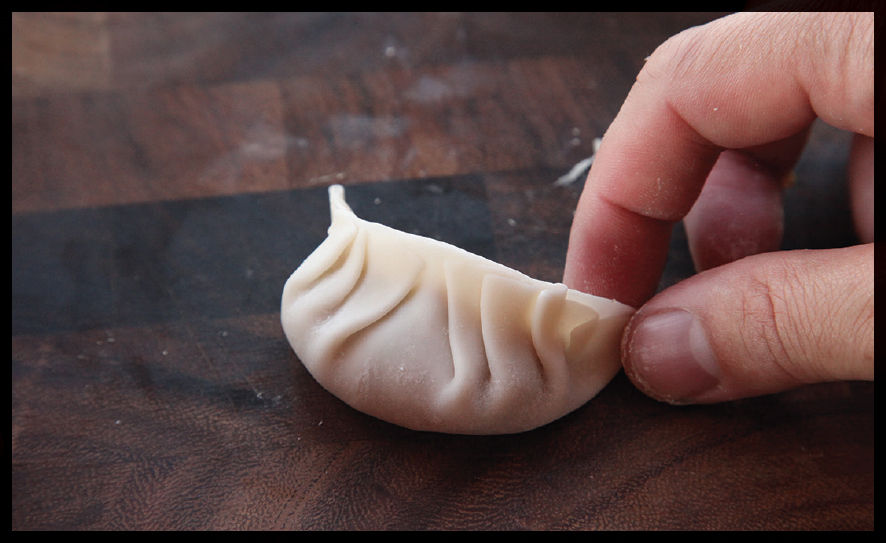
Plump up the dumpling, flattening the bottom and forming a nice crescent. Transfer the dumpling to the parchment sheet and repeat.
HOW TO FREEZE DUMPLINGS
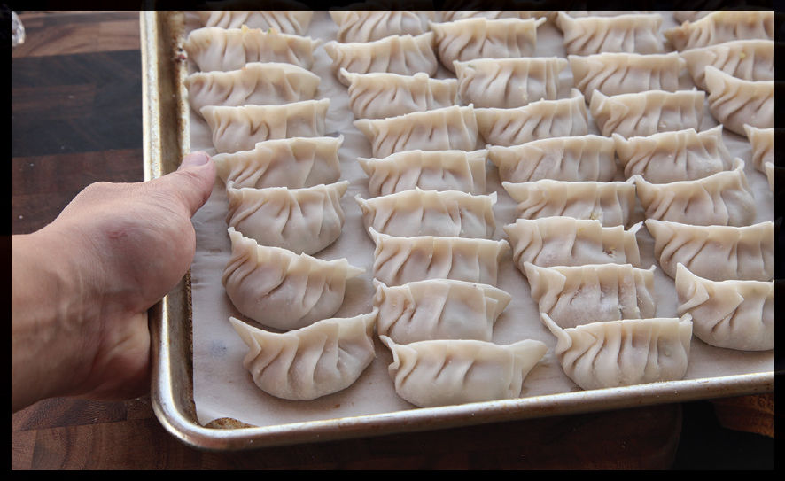
Once you’ve completed all your dumplings, they are ready to cook immediately or to freeze for later use. To freeze, place the entire tray of dumplings into the freezer uncovered and let them rest until fully frozen, about half an hour, then transfer the frozen dumplings to a zipper-lock freezer bag, squeeze out as much air as possible, seal the bag, and store the dumplings for up to 2 months. The dumplings can be cooked straight from frozen.
HOW TO COOK DUMPLINGS
There are multiple ways to cook dumplings—boiling, steaming, and deep frying—as well as hybrid methods, which involve steaming or boiling followed by panfrying or using the “potsticker” method.
Boiling is the simplest method and results in a relatively thick, soft-skinned specimen. Just toss them into a wokful of boiling water, wait until they float, then let them cook for an extra minute or two to ensure the filling is cooked through. Remove them from the wok with a spider, transfer them to a plate, and serve with dipping sauce.
Steaming is also quite simple, provided you have a bamboo steamer for your wok (if you don’t, you should). This method produces dumplings with a slightly thinner, stretchier skin. Superior, if you ask me. Remember to line your steamer basket with cabbage leaves, parchment, or a reusable silicone liner to prevent sticking. Another advantage of steaming is that with multiple stacking baskets, you can steam a huge quantity of dumplings at once. Bring a few inches of water to a strong boil in a wok, then place the steamer baskets directly in the wok and allow the dumplings to steam until cooked through, 10 to 12 minutes. Transfer the steamer basket directly to a large plate and serve.
Deep frying dumplings by lowering them into a hot wokful of oil (around 325°F/165°C is a good temperature to aim for) and letting them fry until cooked through (4 to 5 minutes) will cause their wrappers to blister and crisp up. Retrieve them with a spider and drain on a rack or on paper towels. They can be served hot, but fried dumplings are also great served cold the next day, when the crispy wrappers absorb sauce very well and retain some of their crispness (fried dumplings are a favorite for bento-style packed lunches in Japan).
Panfrying is my favorite way to cook dumplings, and there are two ways to do it. The first method is to start by steaming or boiling them, allow them to cool and air-dry slightly, then finish them by frying in a couple tablespoons of oil heated in a wok over moderate heat until their bottoms are golden brown and crispy. This method is simple to pull off and especially good if you are cooking a large quantity of dumplings: start by steaming them all in a series of stacking bamboo steamers. Once they’re all cooked through, empty the wok, heat up some oil, and panfry in batches, letting guests eat the dumplings while they’re still hot.

The potsticker approach is a little more streamlined, but it works only for smaller batches of dumplings and has a little more room for error. Even in the most well-seasoned, slickest of woks, there’s still a good chance of the dumplings sticking (they are, after all, called “potstickers”), so I recommend setting the wok aside (!) and using a nonstick skillet for this method.
THE POTSTICKER METHOD, STEP BY STEP
This technique gives you dumplings with a crisp bottom and chewy steamed top. To achieve this, you start by frying the raw dumplings until crisp, then steaming them under a cover to cook the filling and the top of the wrapper through, and finally refrying them until the bottoms crisp up again. These days it’s also in vogue to use a starch slurry in place of plain water during the steaming step, which creates a lacy sheet of crispy fried starch that can bind all of the dumplings together. In Japan, this technique is called hanetsuki gyoza, or “dumplings with wings.”
Step 1 • Fry
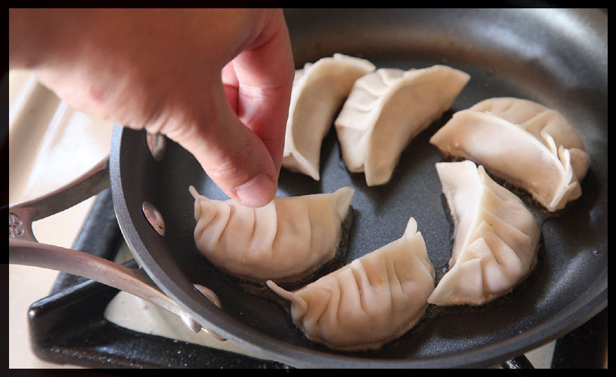
Fry the raw or frozen gyoza over moderate heat in a couple tablespoons of oil with their flat side down in a cast iron or nonstick skillet, swirling the pan as they cook so that they crisp up evenly.
Step 2 • Continue until Golden
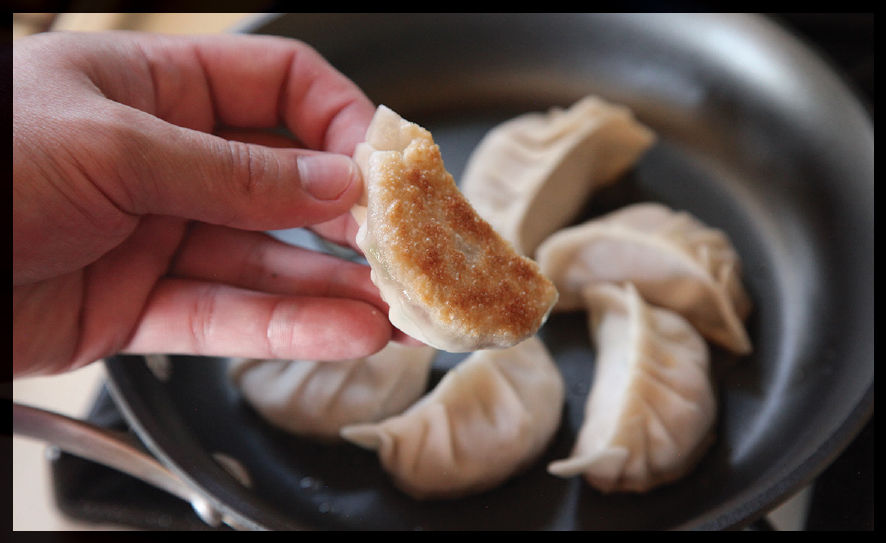
Keep frying (and don’t stop swirling!) until golden brown and blistered evenly across the bottom surface.
Step 3 • Add Water
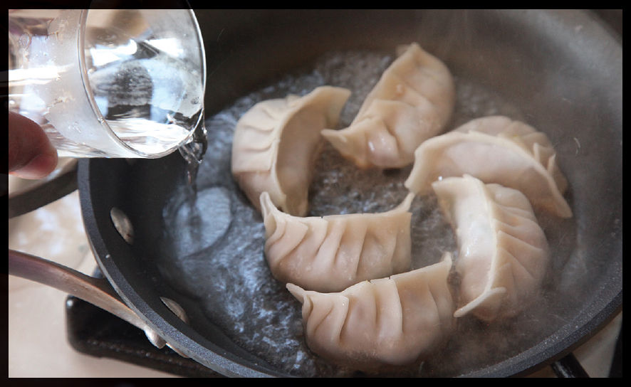
Add about ½ cup of water to the skillet (if using an 8- or 10-inch skillet, or ¾ cup if using a 12-inch skillet) all at once (adding it rapidly will minimize the amount of spattering and keep things neater.
Step 4 • Cover and Cook
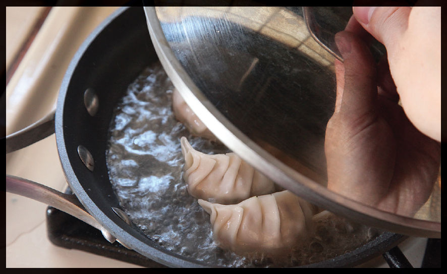
Increase the heat to medium-high, then cover the pan immediately.
Step 5 • Cook Through

As the water evaporates, it’ll gently steam the tops of the dumplings, cooking the filling through and steaming the wrapper to a perfect tender-stretchy texture over the course of a few minutes.
Step 6 • Refry
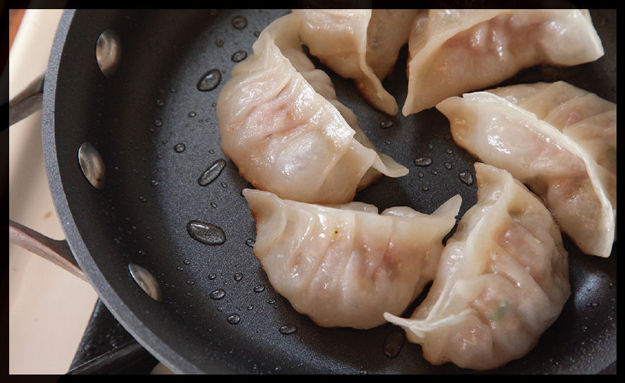
Remove the lid and keep cooking until the water has completely evaporated. If cooking the dumplings on their own, swirl the pan gently to promote even cooking and ensure the dumplings aren’t sticking to the bottom. If adding a starchy layer, you’ll notice it start to crisp up and start to pull away from the edges of the pan. Encourage it to lift using a thin metal spatula and move the pan around the flame to promote even browning of that layer.
Step 7 • Extra Crisp!
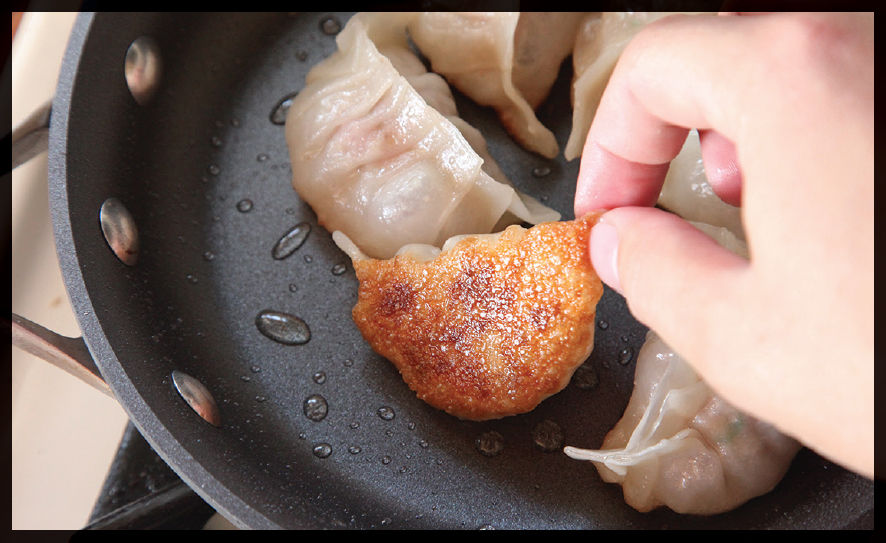
Keep on cooking until the dumplings are extra-crisp on the bottom (and I mean crisp!).
Step 8 • Invert onto a Plate and Serve
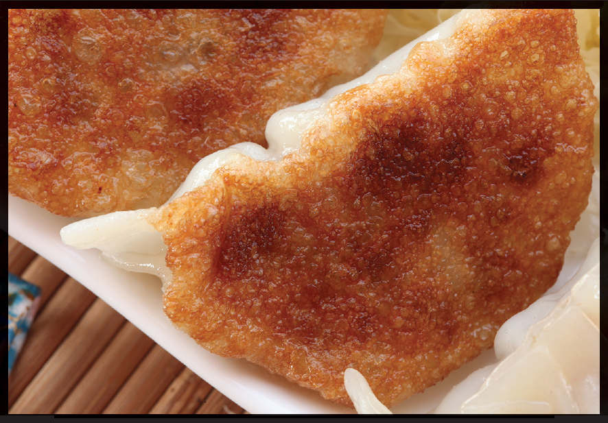
Off the heat, invert a plate over the top of the pan, then flip the whole thing over so that the dumplings invert onto the plate with their crisp sides facing up. Serve immediately with dipping sauce.
HOW TO MAKE “DUMPWINGS”
These days it’s in vogue to use a starch slurry in place of plain water during the steaming step, which creates a lacy sheet of crispy fried starch that can bind all of the dumplings together and add a nice extra crunchy element to the dish. In Japan, this technique is called hanetsuki gyoza, or “dumplings with wings.” I just call them “Dumpwings.”
The process is simple. To do it, follow the potsticker method. In step 3, rather than adding plain water to the pan, add a starchy slurry made by stirring together 1 tablespoon (9 g) cornstarch or tapioca starch (the latter will produce a more crackly, glass-like lace), 1 teaspoon all-purpose flour, and ½ cup (120 ml) water until no lumps remain (double these amounts if using a 12-inch-skillet). Proceed exactly as directed. The slurry will get very thick and bubbly and look all sorts of wrong as the dumplings steam. Don’t worry; just let it keep cooking down. As the starchy liquid evaporates, eventually a layer of crispy starch will get left behind and start to brown. At first you’ll notice the starchy layer start to lift up off the pan around the edges. Continue cooking until it is extra-crisp and brown, then use a very thin metal spatula to gently release the whole layer of dumplings off the bottom of the skillet. Place an inverted plate on top and flip everything together so that the “dumpwings” end up lacy side up on the plate.
While this technique can be done in cast iron or in a carbon steel wok, this is one case where I strongly recommend a good nonstick skillet as it’ll greatly minimize the risk of having the starchy layer stick to the pan.
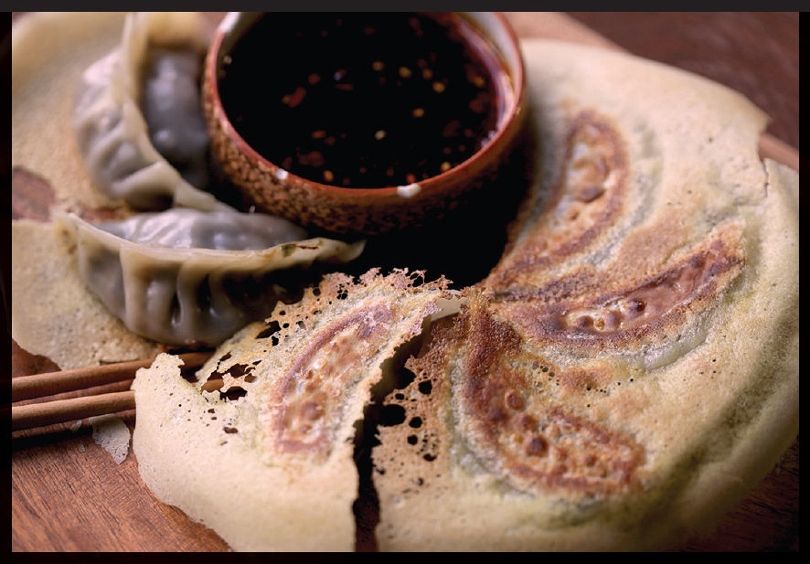